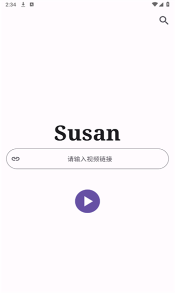
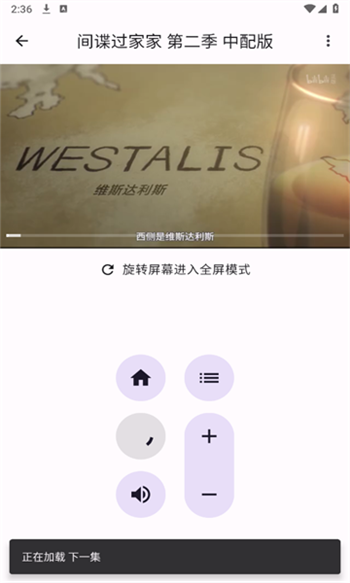

Susan 能当追剧主力用吗？8 个问题说清楚
Susan 是一款聚合多平台视频源的安卓 App，一个顶几个、APK 才 9MB、免费无广告、无内购无推送。本文整理了关于它的常见问题速查，从安装到实际体验一次性讲透。
整理一篇关于 Susan 的快问快答，覆盖你决定要不要装之前最想搞清楚的几件事。
一、Susan 到底是什么软件？
Susan 是一款聚合多平台视频源的安卓 App。简单说，腾讯视频独播的剧爱奇艺找不到、B 站才有的番其他平台看不到——这些跨平台的热门内容，用 Susan 大概率能搜到并在线播放。它自己不提供内容，做的是把分散在各平台的观看入口集中到一个地方，省得你在手机上装三四个视频 App 来回切换，想深入了解的话可以去 Susan官网 看看它的完整介绍。

二、哪些人适合用 Susan？
最适合的是追剧频繁但不想每个平台都装一个 App 的用户——尤其是那些同时追着两三部剧、一部在 A 平台一部在 B 平台的情况。日常看综艺、追番、补老剧都能用它解决。不太适合的场景是你想看的内容只有官方 App 独家才有、或者你习惯了某个视频 App 的付费会员和专属功能（比如离线下载、专属画质）。
三、Susan 怎么装？APK 多大？
安装包体积约 9.06MB（当前 v1.0.9），非常轻巧。安装方式：先从官方下载拿到 APK，然后转存到自己的网盘，再用手机端下载。最省事的路径：手机装夸克网盘 App → 找到转存的 Susan 文件夹 → 点 APK 直接下载到手机 → 在系统设置里允许安装未知来源应用就能装。全程 WiFi 下十几秒搞定。也可以先下到电脑再用数据线或微信文件助手传到手机。
四、怎么用 Susan 找剧看？
核心的两种方式：站内搜片和链接解析。站内搜片就是打开 App 直接搜剧名，有点像打开任意一个视频 App 搜东西的感觉。链接解析适合你在其他地方看到某个视频链接但平台 App 装不下的时候——把链接粘进来，Susan 能帮你解析播放。两种方式配合着用，日常追剧够用了。
五、Susan 的播放器有什么实用功能？
最实用的是自动全屏横屏——手机一横过来视频就自动铺满屏幕，不需要额外开任何开关。如果你的手机系统关闭了自动旋转，可以手动点播放器控制条上的全屏按钮强制切换。竖屏也能看，不过 16:9 宽屏视频会有黑边。一些更细的播放器参数和操作技巧可以翻一下 Susan文档 了解。一个需要注意的点：当前版本不支持自动播放下一集，每集播完得手动切回去选下一集，习惯了也还好。如果你经常连续追一部剧，可以在倒数两分钟的时候提前点下一集做预加载，切换几乎没延迟。

六、和装一堆视频 App 比优势在哪？
一个顶多个不只是口号。每个视频 App 动辄几百 MB，装五六个直接吃掉一两 G 存储；每个 App 都要充会员，不充会员就是广告轰炸；每个 App 都在推自己的独家内容推送，通知栏整天响。Susan 一个 App 解决跨平台找剧的需求，加上 APK 体积才 9MB、免费无内购、没有账号体系也就没有推送、没有弹窗广告。日常追剧主力用它，官方 App 作为补充装一两个就够了，不用装一堆。
七、Susan 有什么坑或者局限？
几个值得提前知道的点：第一，不支持自动播放下一集，每集播完要手动切，这个功能应用说明里没提后续会不会加。第二，下载保存离线看的功能不确定，目前主要是在线播放。第三，画质取决于解析源，不一定能达到官方会员的超清水平。第四，一些真正的独家内容如果只有官方 App 有，Susan 也找不到。这些局限在日常使用中出现频率不高，但知道了就不会意外。
八、长期用 Susan 值不值得？
对于一个跨平台追剧的人来说——值得装。9MB 占不了多少空间，免费无广告体验干净，大部分日常追剧需求都能覆盖。它不是万能的，官方 App 还是要留一两个做补充，但"一个 App 解决大部分问题"这件事本身就已经把最烦的那个痛点解决了。顺便说一句，这套资料在 GitHub、Gitee 和 GitCode 上都能拿到，国内用户访问哪个顺手就用哪个。